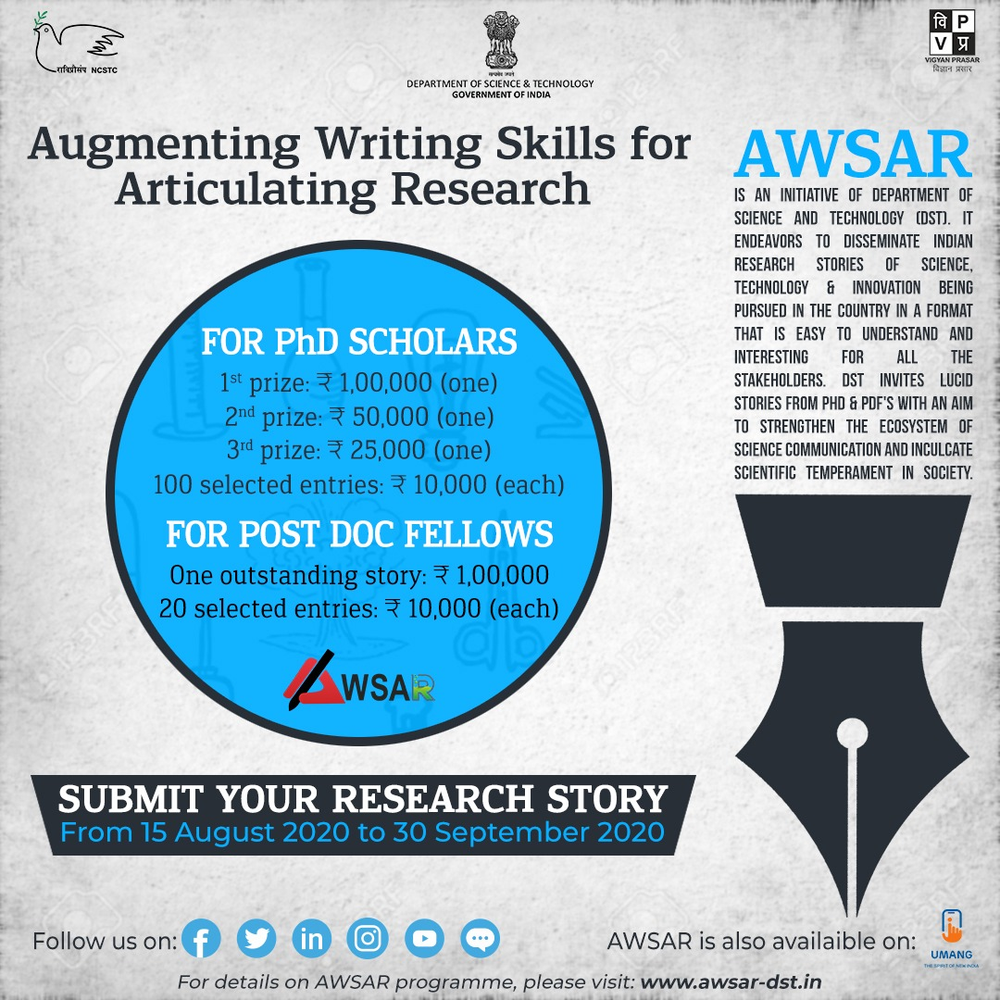
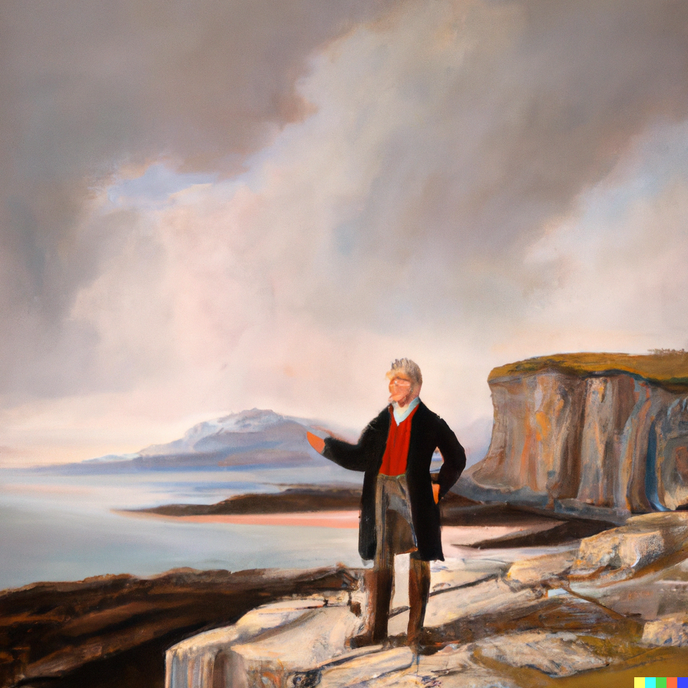

All writing
Media coverage

Norwegian science media forskning.no covered our research on cratons.
Norge ligger oppå en merkelig og urgammel del av jordskorpa (Norwegian)
Norway sits atop a strange and ancient part of the Earth's crust (English)
Public talks & video
Geoscience Education

Geoscience Education (GE) is an online platform for writing science articles — sometimes popular-science pieces — on geological and Earth-system topics, written clearly without diluting the science. GE targets readers with little formal geoscience background but a real interest in the subject.
GE began as an initiative by a few geology graduates and science enthusiasts from 2015–16 onwards. Subhronil, Anupam and I started the platform, and many other subject-matter experts and Earth science students have since helped it grow.
Selected articles
European Geosciences Union Geodynamics blog


I joined as a social media coordinator for the EGU Geodynamics division team in 2019, and became a member of the blog's editorial team — run by early career scientists — the following year.
My author page at EGU Geodynamics
My editorial page at EGU Geodynamics
Articles I wrote
Articles I edited
-
Do lower mantle slabs contribute in generating the Indian Ocean geoid low?
by Debanjan Pal
-
Lithospheric failure at subduction zones
by Nicolai Nijholt
-
The Deccan Chronicle: Plume or no-Plume? Perspective from a Deccan dyke swarm
-
Curious case of convex upwards topography in accretionary wedges
by Sreetama Roy
-
Stellar storms in other worlds: implication to the stability of exoplanetary atmospheres
by Gopal Hazra
-
by Adam Beall
-
Whole solid-Earth numerical simulation: Towards an understanding of mantle-core interactive dynamics
-
Modelling the deformation in the Indian plate and the India–Eurasia collision zone
-
Rayleigh-Taylor instability in geodynamics
by Dip Ghosh
American Geophysical Union: Eos


Plate tectonics, coupled with convection in the mantle, governs the destructive forces applied to Earth's lithosphere, its topmost layer of rock. Oceanic lithosphere is recycled in subduction zones after a couple of hundred million years or so; continental lithosphere often survives longer, but is still ultimately deformed, eroded and destroyed by the underlying convective mantle. On a tectonically active Earth, rocks older than a few billion years should be rare to nearly nonexistent.
Yet such ancient rock, dating back more than 3 billion years (and in places, perhaps more than 4 billion), has been found in different parts of the world. These very old rocks are known as cratons, from the Greek root κράτος, meaning strength. Understanding how cratons have survived for so long — some almost since the birth of the planet — remains one of the grand challenges of geodynamics.
Find the complete article: Cratons, why are you still here?
Augmenting Writing Skills for Articulating Research

Augmenting Writing Skills for Articulating Research (AWSAR) is an initiative to disseminate Indian research stories among the public in an easy-to-understand, engaging format. PhD scholars and postdoctoral fellows in science and technology are encouraged to write at least one popular-science article during their fellowship and enter a national competition.
I won the AWSAR award in 2019 for the article How did the Oldest Part of the Earth Still Survive Today?
বাংলায় লেখালেখি
I actively pursue geoscience communication in my own language, Bengali. I've written articles for social media, e-magazines and printed magazines; some are linked below.
-
কলকাতায় ভূমিকম্প: প্রয়োজন বৈজ্ঞানিক ব্যাখ্যা ও যুক্তিনিষ্ঠ সচেতনতা
Nagorik.net
-
জীবিত কিংবা মৃত গ্রহের সন্ধানে
অন্বেষা পত্রিকা, বিশেষ সংখ্যা এক্সট্রা টেরিস্ট্রিয়াল
-
যারা ডুবে যাবে
বিজ্ঞান লিখন, কলকাতা বইমেলা সংখ্যা, ২০২৫
-
আবহাওয়ার পূর্বাভাস
বিজ্ঞান লিখন, শারদীয়া সংখ্যা, ২০২৪
-
এ লেভেলে' বিজ্ঞান
-
Review of O'Neil & Aulbach (2022), Science Advances. Geoscience Education
-
ডারউইন বনাম কেলভিন: পৃথিবীর বয়সের খোঁজে
Geoscience Education
-
পৃথিবীর প্রাচীনতম গ্লোবের খোঁজে
Geoscience Education
-
দ্বিতীয় মহাযুদ্ধের ডুবোজাহাজ খুঁজতে গিয়ে ধরা পড়লো পৃথিবীর চৌম্বক ক্ষেত্রের দিক পরিবর্তন
Geoscience Education
-
ডাইনোসরের বিলুপ্তি থেকে হিমালয়ের উত্থান – এক ভূতাত্ত্বিক অভিযান
Geoscience Education
-
ভারত মহাসাগরের গর্ত: পর্ব ৩ (Super plume)
2021. Geoscience Education
-
ভারত মহাসাগরের গর্ত: পর্ব ২ (Geoid Anomaly)
2021. Geoscience Education
-
2021. Geoscience Education
-
2021. বিজ্ঞান
-
পৃথিবীর প্রাচীন পাথর গুলির জীবনযাত্রা
2021, September. বিজ্ঞান কথা, Vigyan Parisar, Govt. of India, p. 14–15
-
2021. এ লেভেলে' বিজ্ঞান
-
2020. বিজ্ঞান
ইতিহাসের লেখালেখি

I'm interested in the history of geoscience, and write about it in Bengali. Some links are below.
-
২০২৩. ইতিহাস তথ্য ও তর্ক
-
২০২৩. ইতিহাস তথ্য ও তর্ক
-
২০২৩. ইতিহাস তথ্য ও তর্ক
-
২০২৩. ইতিহাস তথ্য ও তর্ক